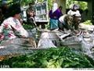

|
|

تنها يك درصد زنان سرپرست خانوار روستايي داراي مالكيت زمين هستند
دو شنبه23 مهر 1386
ایسنا: مشاور وزير جهاد كشاورزي گفت: يك درصد زنان در ايران داراي مالكيت زمين هستند.
به گزارش خبرگزاري دانشجويان ايران (ايسنا)، دانيالي با اعلام اين مطلب خاطرنشان كرد: با وجود يك ميليون و 750 هزار نفر زن سرپرست خانوار در روستاها اين يك درصد رضايتبخش نيست و ما بايد با همانديشي در فعاليتهايي كه در حوزه زنان شاغل انجام ميشود تلاش كنيم باعث افزايش و بهبود وضعيت فعلي شويم.
مديركل دفتر امور زنان روستايي و عشايري وزارت جهاد كشاورزي برگزاري دورههاي آموزشي مرتبط براي مشاوران در تمام نقاط كشور با توجه به فرهنگ محلي هر منطقه، بازديد از پروژهها، برگزاري نشست در مناطق، ايجاد مجتمعهاي كارآفريني و گرفتن اعتبارات لازم از مركز زنان را از برنامههاي آتي وزارت براي ارتقا و بهبود وضعيت خدمات ارائه شده دانست.
وي با ابراز رضايت از فعاليتهاي انجام شده از سوي جهاد كشاورزي آذربايجان شرقي تاكيد كرد: آذربايجان شرقي از استانهايي است كه در حوزه زنان فعاليتهاي چشمگيري انجام داده و در ردهبندي كشوري رتبه دوم يا سوم كشور را داراست.